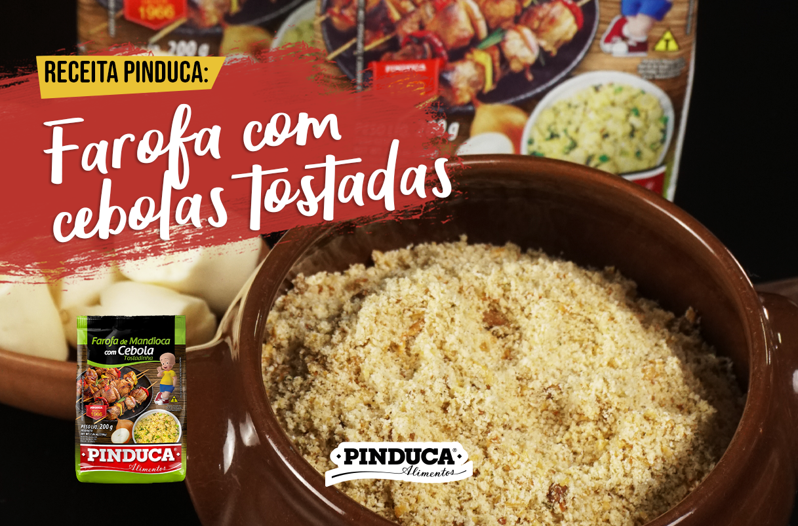
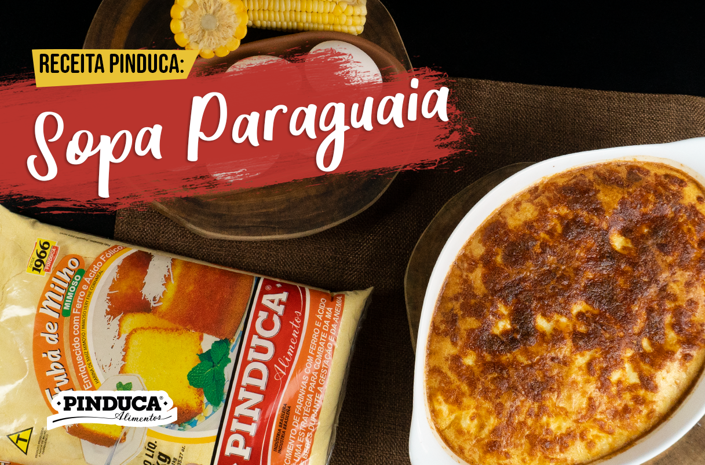

Pinduca Alimentos
A alegria da festa junina só está completa com os docinhos de amendoim, doce de leite e
banana da Pinduca! ???????? Celebre o sabor dessa festa tão amada com os produtos que
fazem parte do arraiá da família brasileira há mais de 50 anos! ???? E aí, qual sabor
típico não pode faltar na sua festança?
#festajunina#mesajunina#pinducaalimentos
Pinduca
@pinducaalimentos

DELICIOSA FAROFA COM CEBOLA TOSTADA
Pinduca Alimentos
Se farofa Pinduca já é bom, imagina com cebola tostada! Não deixe de experimentar essa
novidade. Siga a Pinduca Alimentos no Instagram: @pinducaalimentos
#farofa#farofapinduca#pinducaalimentos
Pinduca
@pinducaalimentos

APRENDA O PASSO A PASSO DA SOPA PARAGUAIA
Pinduca Alimentos
A Sopa Paraguaia é uma receita que teve sua origem entre os indígenas guaranis e,
originalmente, era um um caldo de milho debulhado ou ralado, rico em temperos. A
história de sua mudança para bolo tem muitas versões, uma delas diz que o primeiro
presidente do Paraguai, Carlos Antonio López, adorava a
receita e pediu para seu cozinheiro fazer o caldo, mas durante a preparação, o chefe
...
colocou milho demais, deixando a massa muito sólida. O presidente Carlos não só
aprovou o bolo feito por seu chefe, como passou a chamá-lo de Sopa Paraguaia. Ficou
curioso para experimentar essa receita? Então confira como prepará-la!
Ingredientes:
3 ovos
2 xícaras de leite
1 cebola grande refogada
3 xícaras de Fubá Pinduca
1 colher de sopa de sal
1 colher de sopa de fermento
Queijo mussarela
Modo de Preparo:
Bata no liquidificador os ovos, o leite, a cebola, o fubá e o sal, depois de
misturar tudo acrescente o fermento. Despeje a mistura em uma forma ou em uma
assadeira e cubra com bastante queijo mussarela. Por fim, leve ao forno pré-aquecido
por aproximadamente trinta minutos.
Pinduca Alimentos
Faça chuva ou faça sol, o churrasco é uma paixão brasileira e tem um espaço mais do que
especial em nossos corações. E para esse momento especial ser ainda mais gostoso,
separamos 3 dicas para você.
• Como acender a churrasqueira: ...
Faça uma "casinha" com carvão, deixando um buraco no meio
Enrole um pedaço de papel toalha e coloque no meio do carvão
Coloque mais bolinhas de papel toalha
Despeje óleo de cozinha
Agora é só ascender
• Tenha sempre:
Uma boa faca
Garfo de cabo longo
Pinça para churrasco